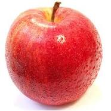
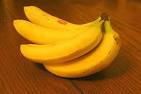
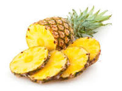

A maçã é pseudofruto pomáceo da maciera, árvore da família Rosaceae é um dos pseudofrutos de árvore mais cultivados, e o mais conhecido dos muitos
membros do género Malus que são usados pelos seres humanos

Banana, pacoba ou pavoca é uma pseudobaga da bananeira, uma planta herbácea vivaz acaule da família Musaceae. São cultivadas em 130 países. Originárias do
sudeste da ásia são atualmente cultivadas em praticamente todas as regiões tropicais do planeta.

O ananás ou abacaxi, é uma infrutescência tropical produzida pela planta de mesmo nome, caracterizada como uma planta monocotiledônea da família das
bromeliáceas da subfamília Bromelioideae. É um símbolo das regiões tropicais subtropicais.
